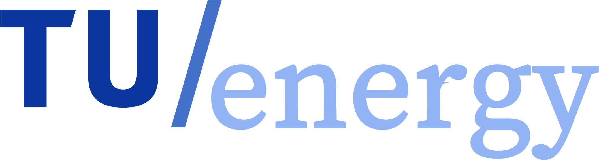

Door wie zijn deze algemene voorwaarden gemaakt?
Deze algemene voorwaarden zijn van Energie-Nederland, de vereniging van energieleveranciers in
Nederland. In de Commissie Zelfregulering van de Sociaal-Economische Raad (SER) zijn de voorwaarden met
de Consumentenbond en de Vereniging Eigen Huis besproken.
Energie-Nederland, de Consumentenbond en de Vereniging Eigen Huis zijn het met elkaar eens over alle
voorwaarden, maar er zijn twee uitzonderingen en dat zijn het artikel over schade (artikel 17.4) en het artikel
over de redenen waarom wij de leveringstarieven mogen veranderen (artikel 19.3).
Deze voorwaarden zijn er voor u en voor ons
U heeft een leveringsovereenkomst voor elektriciteit en/of gas afgesloten met uw energieleverancier.
Deze voorwaarden horen bij die overeenkomst. In deze voorwaarden staan de regels waaraan u en uw
energieleverancier zich moeten houden. Om u aan deze voorwaarden te houden, is het nodig dat u ze kent
en begrijpt. Samen met deze voorwaarden gelden ook de voorwaarden voor het product waarvoor u een
leveringsovereenkomst heeft afgesloten.